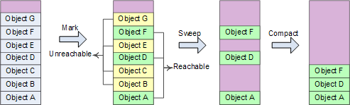
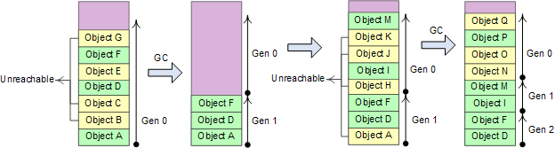

GC
垃圾回收机制是C#中重要的内存管理机制，学习C#包括使用C#的Unity时，想要合理地控制内存，提升性能，就需要了解垃圾回收的具体机制，本文整理了网上许多博客的内容，汇集成一篇较为详尽的GC介绍
何为垃圾
.NET类型分为两大类，值类型和引用类型。前者分配在栈上，不需要GC回收，而后者分配在堆上，其内存释放和回收需要通过GC.一个引用类型对象所占用的内存需要被GC回收，需要先成为垃圾,只要判定此对象或者其包含的子对象没有任何引用是有效的，那么就认为它是垃圾。
内存的释放和回收需要伴随着程序的运行，因此系统为GC安排了独立的线程。那么GC的工作大致是，查询内存中对象是否成为垃圾，然后对垃圾进行释放和回收
对于内存中的垃圾分为两种，一种是需要调用对象的析构函数，另一种是不需要调用的。GC对于前者的回收需要通过两步完成，第一步是调用对象的析构函数，第二步是回收内存，但是要注意这两步不是在GC一次轮循完成，即需要两次轮循；相对于后者，则只是回收内存而已。
释放内存的三种方法
构函数只能被GC来调用的，无法确定它什么时候被调用，因此用它作为资源的释放并不是很合理，因为资源释放不及时；但是毕竟它会被GC调用，因此为了防止资源泄漏，析构函数可以作为一个补救方法。而Close与Dispose这两种方法的区别在于，调用完了对象的Close方法后，此对象有可能被重新进行使用；而Dispose方法来说，此对象所占有的资源需要被标记为无用了，也就是此对象被销毁了，不能再被使用。
GC的Generation优先回收
GC为了提高回收的效率使用了Generation的概念，原理是这样的，第一次回收之前创建的对象属于Generation 0，之后，每次回收时这个Generation的号码就会向后挪一，也就是说，第二次回收时原来的Generation 0变成了Generation 1，而在第一次回收后和第二次回收前创建的对象将属于Generation 0。GC会先试着在属于Generation 0的对象中回收，因为这些是最新的，所以最有可能会被回收，比如一些函数中的局部变量在退出函数时就没有引用了（可被回收）。如果在Generation 0中回收了足够的内存，那么GC就不会再接着回收了，如果回收的还不够，那么GC就试着在更高代回收
托管资源和非托管资源的不同回收方式
在C#中，资源分为托管资源和非托管资源两种。GC在回收无用对象资源时，可以自动回收托管资源（比如托管内存），但对于非托管资源（比如Socket、文件、数据库连接）必须在程序中显式释放。
托管资源的回收首先需要GC识别无用对象，然后回收其资源。一般无用对象是指通过当前的系统根对象和调用堆栈对象不可达的对象。对象有一个重要的特点导致无用对象判断的复杂性：对象间的相互引用！如果没有相互引用，就可以通过“引用计数”这种简单高效的方式实现无用对象的判断，并实现实时回收。正是由于相互引用的存在导致GC需要设计更为复杂的算法，这样带来的最大问题在于丧失了资源回收的实时性，而变成一种不确定的方式。
对于非托管资源的释放，C#提供了两种方式：
1.Finalizer：写法貌似C++的析构函数，本质上却相差甚远。Finalizer是对象被GC回收之前调用的终结器，初衷是在这里释放非托管资源，但由于GC运行时机的不确定性，通常会导致非托管资源释放不及时。另外，Finalizer可能还会有意想不到的副作用，比如：被回收的对象已经没有被其他可用对象所引用，但Finalizer内部却把它重新变成可用，这就破坏了GC垃圾收集过程的原子性，增大了GC开销。
2.Dispose Pattern：C#提供using关键字支持Dispose Pattern进行资源释放。这样能通过确定的方式释放非托管资源，而且using结构提供了异常安全性。所以，一般建议采用Dispose Pattern，并在Finalizer中辅以检查，如果忘记显式Dispose对象则在Finalizer中释放资源。
GC为程序带来安全方便的同时也付出了不小的代价：一则丧失了托管资源回收的实时性，这在实时系统和资源受限系统中是致命的；二则没有把C#托管资源和非托管资源的管理统一起来，造成概念割裂。
托管
托管是托付C#运行环境帮我们去管理，在这个运行环境中可以帮助我们开辟内存和释放内存，开辟内存一般用new，内存是随机分配的，释放主要靠的是GC也就是垃圾回收机制,但是GC无法回收非托管对象
GC的可达性分析
引用计数法:给对象中添加一个引用计数器，每当有一个地方引用它时，计数器值加1；当引用失效时，计数器减1；任何时刻计数器都为0的对象就是不可能再被使用的。
引用计数算法的实现简单，判断效率也很高，在大部分情况下它都是一个不错的算法,但它很难解决对象之间相互循环引用的问题。
GC Roots Analysis：主流用这个判断
基本思路就是通过一系列名为”GC Roots”的对象作为起始点，从这些节点开始向下搜索，搜索所走过的路径称为引用链(Reference Chain)，当一个对象到GC Roots没有任何引用链相连时，则证明此对象是不可用的
即使在可达性分析算法中不可达的对象,也并非是“非死不可”的,这时候它们暂时处于“缓刑”阶段,要真正宣告一个对象死亡,至少要经历两次标记过程:如果对象在进行可达性分析后发现没有与GC Roots相连接的引用链,那它将会被第一次标记并且进行一次筛选,筛选的条件是此对象是否有必要执行finalize()方法。当对象没有覆盖finalize()方法,或者finalize()方法已经被虚拟机调用过,虚拟机将这两种情况都视为“没有必要执行”。(即意味着直接回收)
如果这个对象被判定为有必要执行finalize()方法,那么这个对象将会放置在一个叫做F-Queue的队列之中,并在稍后由一个由虚拟机自动建立的、低优先级的Finalizer线程去执行它。
GC Root 引用点
* 虚拟机栈（栈帧中的本地变量表）中引用的对象；
* 方法区中类静态属性引用的对象；
* 方法区中常量引用的对象；
* 本地方法栈中JNI（即一般说的Native方法）引用的对象；
总结就是，方法运行时，方法中引用的对象；类的静态变量引用的对象；类中常量引用的对象；Native方法中引用的对象。
Mark-Compact 标记压缩算法
简单地把.NET的GC算法看作Mark-Compact算法。阶段1: Mark-Sweep 标记清除阶段，先假设heap中所有对象都可以回收，然后找出不能回收的对象，给这些对象打上标记，最后heap中没有打标记的对象都是可以被回收的；阶段2: Compact 压缩阶段，对象回收之后heap内存空间变得不连续，在heap中移动这些对象，使他们重新从heap基地址开始连续排列，类似于磁盘空间的碎片整理。

Generational 分代算法
程序可能使用几百M、几G的内存，对这样的内存区域进行GC操作成本很高，分代算法具备一定统计学基础，对GC的性能改善效果比较明显。将对象按照生命周期分成新的、老的，根据统计分布规律所反映的结果，可以对新、老区域采用不同的回收策略和算法，加强对新区域的回收处理力度，争取在较短时间间隔、较小的内存区域内，以较低成本将执行路径上大量新近抛弃不再使用的局部对象及时回收掉。分代算法的假设前提条件：
1、大量新创建的对象生命周期都比较短，而较老的对象生命周期会更长；
2、对部分内存进行回收比基于全部内存的回收操作要快；
3、新创建的对象之间关联程度通常较强。heap分配的对象是连续的，关联度较强有利于提高CPU cache的命中率，.NET将heap分成3个代龄区域: Gen 0、Gen 1、Gen 2；

Finalization Queue和Freachable Queue
这两个队列和.NET对象所提供的Finalize方法有关。这两个队列并不用于存储真正的对象，而是存储一组指向对象的指针。当程序中使用了new操作符在Managed Heap上分配空间时，GC会对其进行分析，如果该对象含有Finalize方法则在Finalization Queue中添加一个指向该对象的指针。
在GC被启动以后，经过Mark阶段分辨出哪些是垃圾。再在垃圾中搜索，如果发现垃圾中有被Finalization Queue中的指针所指向的对象，则将这个对象从垃圾中分离出来，并将指向它的指针移动到Freachable Queue中。这个过程被称为是对象的复生（Resurrection），本来死去的对象就这样被救活了。为什么要救活它呢？因为这个对象的Finalize方法还没有被执行，所以不能让它死去。Freachable Queue平时不做什么事，但是一旦里面被添加了指针之后，它就会去触发所指对象的Finalize方法执行，之后将这个指针从队列中剔除，这是对象就可以安静的死去了。
值类型在栈里，先进后出，值类型变量的生命有先后顺序，这个确保了值类型变量在退出作用域以前会释放资源。比引用类型更简单和高效。堆栈是从高地址往低地址分配内存。
引用类型分配在托管堆(Managed Heap)上，声明一个变量在栈上保存，当使用new创建对象时，会把对象的地址存储在这个变量里。托管堆相反，从低地址往高地址分配内存
GC的问题
首先，GC并不是能释放所有的资源。它不能自动释放非托管资源。
第二，GC并不是实时性的，这将会造成系统性能上的瓶颈和不确定性。
GC并不是实时性的，这会造成系统性能上的瓶颈和不确定性。所以有了IDisposable接口，IDisposable接口定义了Dispose方法，这个方法用来供程序员显式调用以释放非托管资源。使用using语句可以简化资源管理。
注意事项
1、只管理内存，非托管资源，如文件句柄，GDI资源，数据库连接等还需要用户去管理。
2、循环引用，网状结构等的实现会变得简单。GC的标志-压缩算法能有效的检测这些关系，并将不再被引用的网状结构整体删除。
3、GC通过从程序的根对象开始遍历来检测一个对象是否可被其他对象访问，而不是用类似于COM中的引用计数方法。
4、GC在一个独立的线程中运行来删除不再被引用的内存。
5、GC每次运行时会压缩托管堆。
6、你必须对非托管资源的释放负责。可以通过在类型中定义Finalizer来保证资源得到释放。
7、对象的Finalizer被执行的时间是在对象不再被引用后的某个不确定的时间。注意并非和C++中一样在对象超出声明周期时立即执行析构函数
8、Finalizer的使用有性能上的代价。需要Finalization的对象不会立即被清除，而需要先执行Finalizer.Finalizer，不是在GC执行的线程被调用。GC把每一个需要执行Finalizer的对象放到一个队列中去，然后启动另一个线程来执行所有这些Finalizer，而GC线程继续去删除其他待回收的对象。在下一个GC周期，这些执行完Finalizer的对象的内存才会被回收。
9、.NET GC使用”代”(generations)的概念来优化性能。代帮助GC更迅速的识别那些最可能成为垃圾的对象。在上次执行完垃圾回收后新创建的对象为第0代对象。经历了一次GC周期的对象为第1代对象。经历了两次或更多的GC周期的对象为第2代对象。代的作用是为了区分局部变量和需要在应用程序生存周期中一直存活的对象。大部分第0代对象是局部变量。成员变量和全局变量很快变成第1代对象并最终成为第2代对象。
10、GC对不同代的对象执行不同的检查策略以优化性能。每个GC周期都会检查第0代对象。大约1/10的GC周期检查第0代和第1代对象。大约1/100的GC周期检查所有的对象。重新思考Finalization的代价：需要Finalization的对象可能比不需要Finalization在内存中停留额外9个GC周期。如果此时它还没有被Finalize，就变成第2代对象，从而在内存中停留更长时间。
减少GC调用的方法
GC会stop the world。会暂停程序的执行，带来延迟的代价。所以在开发中，我们不希望GC的次数过多。
(1)对象不用时最好显式置为 Null
一般而言,为 Null 的对象都会被作为垃圾处理,所以将不用的对象显式地设
为 Null,有利于 GC 收集器判定垃圾,从而提高了 GC 的效率。
(2)尽量少用 System.gc()
此函数建议 JVM进行主 GC,虽然只是建议而非一定,但很多情况下它会触发
主 GC,从而增加主 GC 的频率,也即增加了间歇性停顿的次数。
(3)尽量少用静态变量
静态变量属于全局变量,不会被 GC 回收,它们会一直占用内存。
(4)尽量使用 StringBuffer,而不用 String 来累加字符串
由于 String 是固定长的字符串对象,累加 String 对象时,并非在一个 String对象中扩增,而是重新创建新的 String 对象,如 Str5=Str1+Str2+Str3+Str4,这条语句执行过程中会产生多个垃圾对象,因为对次作“+”操作时都必须创建新的 String 对象,但这些过渡对象对系统来说是没有实际意义的,只会增加更多的垃圾。 避免这种情况可以改用 StringBuffer 来累加字符串,因 StringBuffer是可变长的,它在原有基础上进行扩增,不会产生中间对象
(5)分散对象创建或删除的时间
集中在短时间内大量创建新对象,特别是大对象,会导致突然需要大量内存,JVM 在面临这种情况时,只能进行主 GC,以回收内存或整合内存碎片,从而增加主 GC 的频率。
集中删除对象,道理也是一样的。 它使得突然出现了大量的垃圾对象,空闲空间必然减少,从而大大增加了下一次创建新对象时强制主 GC 的机会。
(6)尽量少用 finalize 函数
因为它会加大 GC 的工作量， 因此尽量少用finalize 方式回收资源。
(7)使用软引用类型
如果需要使用经常用到的图片， 可以使用软引用类型， 它可以尽可能将图片保存在内存中， 供程序调用， 而不引起 OutOfMemory。